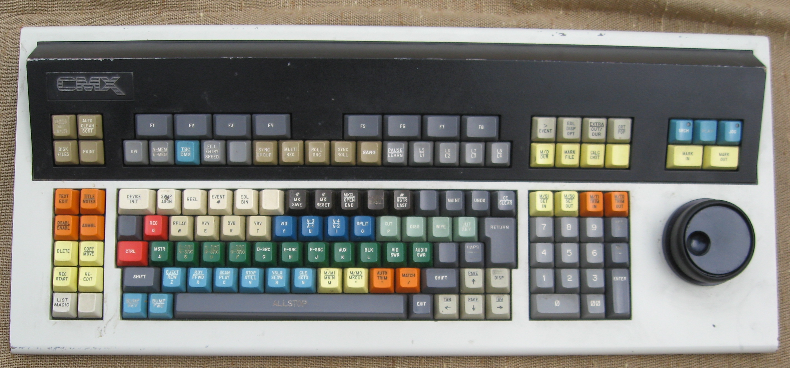
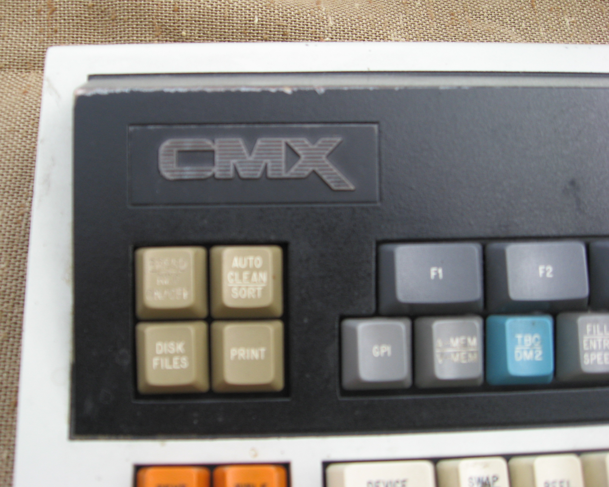

CMX-340 (1976)
The broadcast edit console whose keyboard became an industry standard — with a jog knob box you could hand over for left- or right-handed editors

Overview
CMX Systems was a company founded jointly by CBS and Memorex (the name stood for CBS, Memorex, and eXperimental) in Sunnyvale, California, that pioneered integrating computers with videotape editing. The CMX-340, launched in 1976, was the broadcast edit console that defined the industry. It introduced 'Intelligent Interfaces' (I2) that allowed it to drive a variety of VTRs and video switchers. Within eighteen months of its introduction, over 90% of all broadcast videotape editing ran on a CMX system.
The defining physical feature was a dedicated function keyboard and a jog-knob box called the GIZMO integrated into the keyboard. The GIZMO featured transport buttons and could be re-positioned for left-handed editors — an unusually body-aware, ergonomic feature for a 1976 broadcast console. Editing was performed by typing edit points into the function keyboard and scrubbing the jog wheel to find frames. The CMX keyboard style was later used as the basis of editing systems by Grass Valley, Calaway, and Strassner.
Deep dive
The CMX-340's most unusual physical feature is the GIZMO, a jog-knob box integrated into the edit keyboard. Jog = frame-by-frame scrubbing via a rotary encoder; the GIZMO also carried transport buttons and could be re-positioned to either side of the keyboard for left- or right-handed editors. The physical layout mirrors the editor's hand, and the same surface anchors the function-keyboard editing paradigm CMX invented.
The 340 replaced tape-splice guessing with a dedicated editing keyboard: the operator types edit points (in points, out points, transition types) and scrubs with the jog knob, letting the computer command the VTRs via its Intelligent Interfaces. This 'type the edit, scrub to find it' grammar became the CMX style.
Within 18 months of its 1976 launch, over 90% of all broadcast videotape editing was performed on CMX systems. The 340 was the machine that made computerized, keyboard-driven editing the default for television post-production.
Team & pioneers
- CMX Systems CBS + Memorex joint venture; developed the CMX-340 (1976)
- Ronald Lee Martin CMX developer who later became a head of Universal Studios
Media
